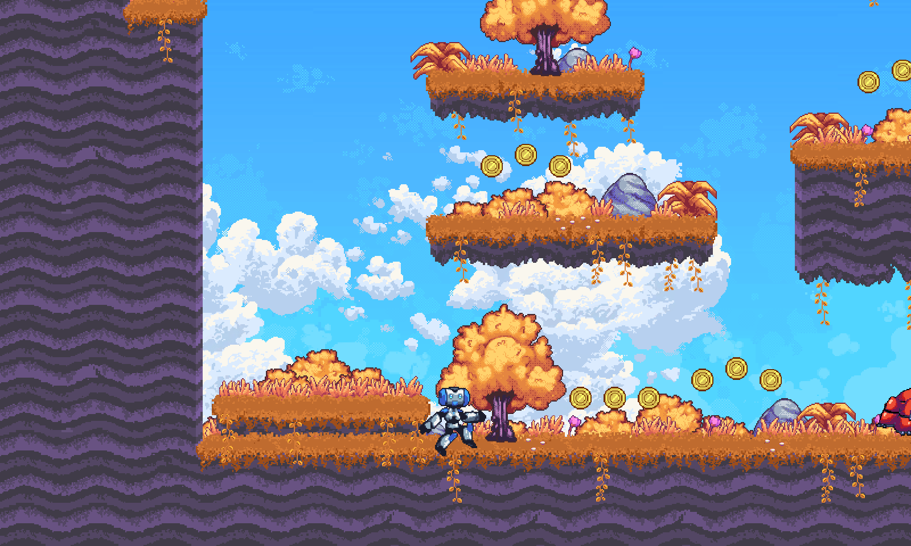

Recorded project ·
Godot platformer
Bundled game game/platformer
The player fell through the ground

The player was 22.25 px past the ground boundary. The check allows 20 px.
Inspect the failed checkRecorded runs ·
Recent verifications
- Fall-through bugReject
- Unchanged gameAccept
Recorded setup ·
Breakout
The paddle and ball bindings are ready for review. Both checks are still drafts.
Open setup reviewFixture recording · published
Repair evidence
See the collision-mask patch and the fresh verdict on the repaired copy. This recording used a stand-in fixer.
Inspect repair evidencePlaytest reports
Reports from your playtesters will appear here when intake is available.
Track playtest intake